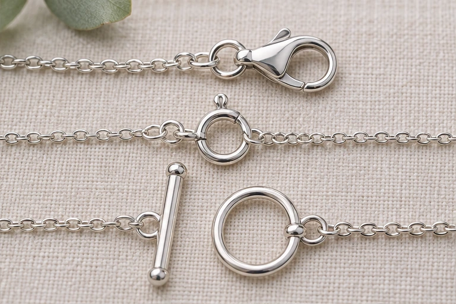

Ilustracja poglądowa wygenerowana AI; nie dokumentuje konkretnego produktu ani aktualnej oferty punktu.
Zapięcie wpływa na wygodę i bezpieczeństwo srebrnej biżuterii równie mocno jak jej splot. Powinno pasować do ciężaru ozdoby, działać płynnie i dawać się obsłużyć bez szarpania. Przy bransoletce sprawdź, czy potrafisz zamknąć je jedną ręką.
Karabińczyk i federing
Karabińczyk ma ruchomą zapadkę ze sprężyną. Jest popularny w łańcuszkach i bransoletkach, a większe modele bywają wygodniejsze dla osób, którym trudno chwycić drobny element. Po puszczeniu dźwigni zapadka powinna wracać do końca. Szczelina lub opóźniony powrót wymagają sprawdzenia u jubilera.
Federing to okrągłe zapięcie z małą dźwignią i wysuwanym fragmentem obwodu. Dobrze komponuje się z delikatnymi łańcuszkami, lecz jego mały rozmiar może utrudniać zapinanie. Obejrzyj też kółeczko po drugiej stronie: nawet sprawny mechanizm nie zabezpieczy ozdoby, jeśli łącznik jest rozgięty.
Toggle i zapięcie pudełkowe
Toggle składa się z poprzeczki przechodzącej przez większe kółko. Może być dekoracyjną częścią bransoletki, ale wymaga właściwej długości i proporcji elementów. Przy nadmiernym luzie poprzeczka może ustawić się tak, że przejdzie z powrotem przez otwór. Oceń to podczas poruszania nadgarstkiem.
W zapięciu pudełkowym sprężysty języczek wsuwa się do obudowy. Spotyka się je między innymi w szerszych bransoletkach i naszyjnikach. Dodatkowe boczne zabezpieczenie pomaga chronić ozdobę, lecz nie zastępuje sprawnego zamka. Zapięcia magnetyczne ułatwiają obsługę, ale ich odporność na przypadkowe rozpięcie zależy od konstrukcji.
Kontrola przed założeniem
Sprawdź zamknięcie nad miękką powierzchnią, obejrzyj ogniwa i nie wciskaj mechanizmu na siłę. Uszkodzone zapięcie często można naprawić. Nie zakładaj, że cały element jest srebrny: sprężynka może być stalowa. Dlatego skup srebra uwzględnia faktyczną zawartość kruszcu. Jeśli rozważasz sprzedaż uszkodzonej ozdoby, w zakładce skup srebra Gorzów znajdziesz kontakt do punktu i ustalisz szczegóły oględzin.